About me
My name is Yaroslav Kostanda. I'm 17 years old and studying at IMC Krems in Austria.
In a world full of opportunities, I'm drawn to: creating websites, interfaces, designs, or simply the creative atmosphere. My journey is just beginning, but today I'm driven to create things with my heart.
SCROLL
I was born in Mariupol, Ukraine, a city that taught me resilience and creativity. From a young age, I was fascinated by how things looked and felt — I spent hours sketching, exploring colors, and imagining how ideas could come to life visually. That curiosity naturally grew into a love for design and web creation. Today, I’m learning to turn those ideas into reality — crafting clean, modern, and meaningful digital experiences. I love the process of making something both beautiful and functional — websites that not only look great but feel effortless to use. For me, design is more than visuals; it’s about communication, balance, and creating something that makes people stop for a second and think: “That’s nice.”

What I do
I'm studying at the intersection of technology and visual solutions.
I experiment with HTML, CSS, and modern web development tools.
I'm developing a sense of style: fonts, colors, composition—everything is important.
I strive to ensure that my work isn't just beautiful, but works for people: it's understandable, useful, and memorable.
Why is this important?
I believe that when design and code work hand in hand, the result is products that not only "exist," but that people want to use. I'm passionate about setting the tone and actively moving towards similar products.
What's next
I'm open to new projects, challenges, and collaborations. If you have an idea, or just want to learn how to do something cool, let's get to know each other and create something memorable.